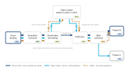
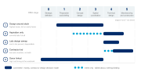

An excerpt, not the finished chapter
Read a sample.
About a third of Chapter 9, as it stands in the current draft. The rest, and the other thirteen chapters, arrive with the book.
About a third of Chapter 9, as it stands in the current draft. The rest, and the other thirteen chapters, arrive with the book.
Chapter 9
The chapter that decides whether reuse is possible at all, because most projects lose the opportunity before anyone opens a drawing.
Procurement for steel reuse is really two jobs, and most confusion on projects comes from mixing them up.
The first is supply. You have a building coming down and steel in it worth recovering. What you are procuring is deconstruction, and the people you are buying from are demolition contractors.
The second is demand. You are putting a building up and you want reused steel in it. What you are procuring is material and the design and construction work around it, and the people you are buying from are stockholders, fabricators and your main contractor.
Some projects are only one of these. Many large projects are both, and the two run on separate contracts, separate programmes and often separate teams who never speak to each other.
Before going further, work out which of three situations you are in, because it changes almost everything that follows.
Donor-linked. The same client, or a contractual link, sits at both ends. The steel is already owned. This is not a purchase, it is a transfer. Commercially simpler, and harder on programme.
Open market. A stockholder sits in the middle. The steel is bought and sold in the normal way, and the stockholder absorbs the timing mismatch between when the steel comes out and when it goes back in.
Hybrid. Donor-linked for part of the frame, open market for the balance. Most large projects end up here.

There is no single way to buy reused steel. There are several, they commit at different moments, and they achieve very different results. Choosing deliberately matters more than choosing well.

This is dangerous territory, and it is worth being blunt about why.
A project states an ambition for reuse. Nobody attaches a mechanism to it. No target reaches a contract, no responsibility is allocated, no design decision is made differently. Somebody spots suitable stock at Stage 2 or 3 and reserves it, because the ambition is real and the stock is finite. The design then carries on evolving, as designs do. By the time procurement is live the members required have shifted, the reservation no longer fits, and it is quietly abandoned.
The damage is not confined to that project. Stock has been off the market for months or years and unavailable to someone who could have used it. A stockholder has held material in good faith and been let down. And the project now has a story about how it tried reuse and it did not work, which will be repeated at the next inception meeting by someone who was there.
Aspiration without mechanism is worse than no aspiration at all.
This is not a theoretical worry. Reviewing three hundred tonnes of reuse across seven projects, one engineering practice found that writing reuse into the specification was the single highest-impact enabler, and that where the client's expectation was never converted into a contractual obligation, reuse quietly slid into single figures or disappeared entirely.
The version that works looks similar from the outside and is completely different underneath. The ambition is genuine, reuse stays front of mind through the design stages, and the quantity flexes with the design rather than the design being expected to hold still for a reservation.
On large projects there is an understandable pull towards reserving stock as soon as something suitable appears, often at Stage 2 or 3. Resist it. That stock comes off the market for what may be years, the design keeps evolving, and by the time procurement is live the members you need have shifted. Practices with the most reuse experience now advise reserving nothing and letting the stockholder match from the current pool at the right moment. The exception is a discrete structure whose design can genuinely be pinned early, where reserving has been shown to work. If you are going to reserve, lock those elements of the design first.
Chapter 9 continues with routes 1, 3, 4 and 5, the storage window and the two clocks that govern programme, and what has to be in the contract before any of this is procurable, plus three more pull-out boxes. It arrives with the other thirteen chapters when the playbook publishes.